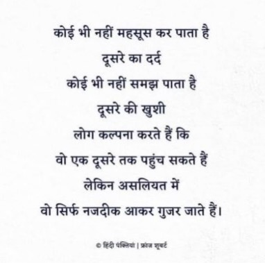

-"What's sad about having people in your life is that, you know you have them, but it feels like you don't." -
somewhere. 
अब इस असलियत को बदलते हैं।
-“Don’t be ashamed to need help. Like a soldier storming a wall, you have a mission to accomplish. And if you’ve been
wounded and you need a comrade to pull you up? So what?” — Marcus Aurelius
“Asking for help takes strength, to be honest with oneself and others, to know when one is over their head. It takes a
certain amount of humility to admit this, but it is also an act of strength. It took me time to accumulate this kind
strength, but I always had that humility to admit I needed monetary help directly from the citizens of India and the
world — Aurelius, as strong as he was as Rome’s emperor, understood this very well, and so have I. So here I am, asking
for help before I become the most suitable for our nation” - Nishchal.
O Me! O Life! BY WALT WHITMAN
Oh me! Oh life! of the questions of these recurring,
Of the endless trains of the faithless, of cities fill’d with the foolish,
Of myself forever reproaching myself, (for who is more foolish than I, and who more faithless?)
Of eyes that vainly crave the light, of the objects mean, of the struggle ever renew’d,
Of the poor results of all, of the plodding and sordid crowds I see around me,
Of the empty and useless years of the rest, with the rest me intertwined,
The question, O me! so sad, recurring—What good amid these, O me, O life?
Answer:
That you are here—that life exists and identity,
That the powerful play goes on, and you may contribute a verse.
If you support Nishchal, it would mean you are
supporting us to support Nishchal's vision and mission for the world.
The truth is — All that is going on is, fight fascism of the past with the fascism of the present and racism of the past with racism of the present, under the most successful narrative #victimhood. WTF!